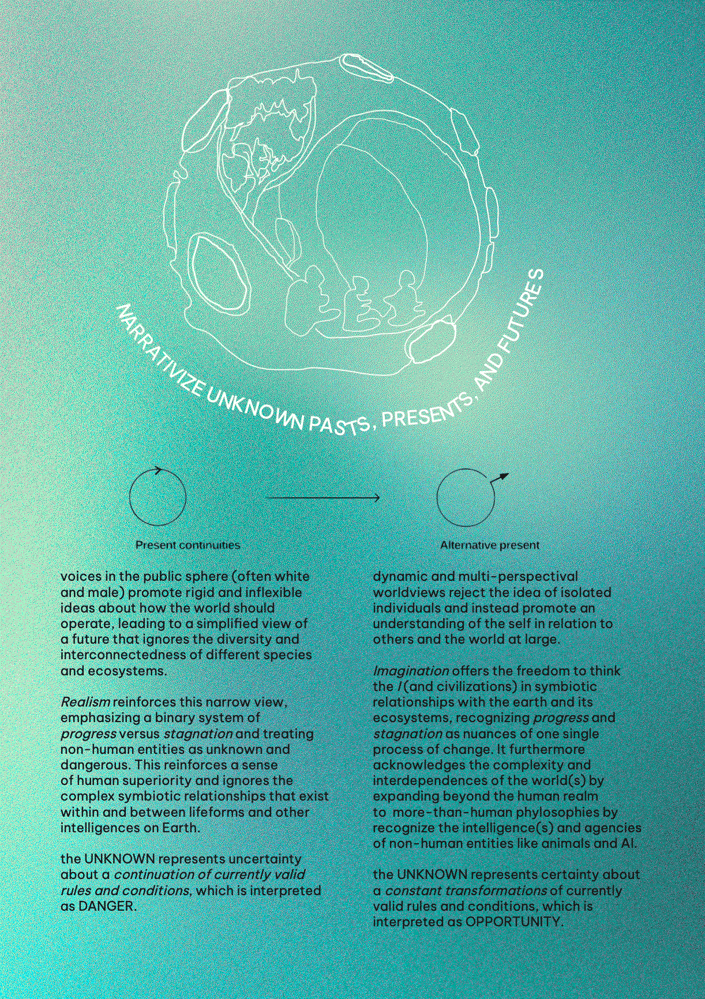
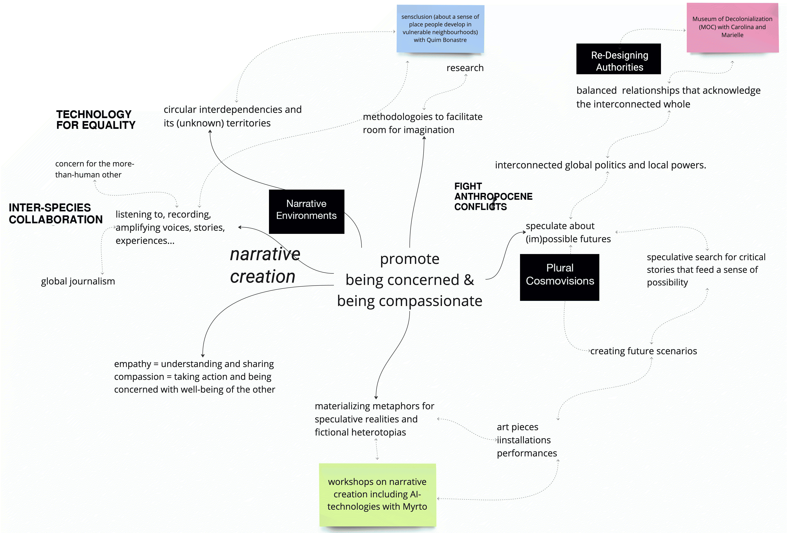

¶
🗓 Week 21 / 22 March 2023
second design dialogues¶
Sparks of the Design Dialogues II (March 2023)
(1) creating narratives with AI-inspiration¶
this projects aims to faciliate room for storytelling and narrative creation. Till now we explored various technique on incentivizing new narrations in workshop-formats and online-exchange platforms. Based on the traveller we begun to narrow down a transitioning-concept (vizualized in three ply-wood cards) and a topic to apply this concept too within a workshop setting. We choose education and the hybridization towardsd online learning as a topic. The outputs of this workshop, we translated into AI-prompt and played with what ChatGPT, Midjourney and DALL-E would do with our data.
Presenting this in our second design dialogues and showing our progress and difficulties led to inspiring conversations and inputs. Although none if it was very new to our thinking, it was good to get reflected back points of departure that we have earlier set away to focus on ther directionsl. Two main things will we be working ono further:
-
including AI like ChatGPT, Midjourney and DALL-E and transcribing services such as otter directly into the workshop setting. maybe with a projected live-stream of what the converstion participants have, spark when being promped into the AI.
-
choose a topic that is less heavy, opinion-loaded. overall, in order to explore the technique to discover various possibilities of transitioning, it might be helpful to choose a completely random topic. the problem with the educational system is that this is worldy-important and everyone has a strong opinion yet is also scared of saying something wrong. so there were no opposing extremes in the conversations neither very abstract imaginaions. thus, the topic with which to explore our transitioning-technique with the help of AI should be in generall not of so much important and giving a concrete frame to play with. What about dog-poo in raval ?
(2) decolonialze the MOC¶
with the “The Museum of Colonization” (MOC), we are trying to bring attention to the systematic structures we live in and that are mostly based on white oppression and appropriation. The MOC is there to create a space for BIPOC people to share their frustration and anger and serves at the same time for non-BIPOC people to notice and challenge colonial thought. as a team we dream of decolonial futures.
with the MOC, we explore the theme that “the world is a museum to colonization, you just don’t see it.” Our aim is to create projects that help people recognize colonization, challenge colonialism, and dream of decolonial futures. We approach our work with a joy-filled and comedy-led mindset, prioritizing fun and laughter while tackling serious topics. As people who have been marginalized, it’s important to us to bring joy to the work we do.
we started this project with a ticket dispenser and the idea that with the help of tourists, BIPOC and non-BIPOC people we can deface the cities statues that pay trtibute to slavers and colonizers. We made it an exchange - the participant get a fun sticker and the chance to interact with the gumball-machine if they promised to consciously “visit” the MOC - thus, pay attention to the signs around them and place the sticker onto a artefact of white oppression.
then we advanced that idea and transformed the unhandy ticket-dispenser-gumball-machine into a portable stamp equipped with a GPS The idea is that with that handy acceccoire, people can stamp a QR-ode onto sign of white oppression (not a sticker anymore) and this QR-code leads to an online-interface in which a map pins the location on which people leave a stamp.
during the design dialogues, the project resonated very well and with lots of positive feedbacks. one idea that came up was organizing a tour - like a free-walking tour but instead of focussing on Gaudis art pieces, focussing on the colonial load of things, streets, foods, plans, people…
what is my envisioned alternative future?¶
after having startedd and ended each term with a summary of what I work for and against within the context of the two ‘my fight’ posters, this time I will wrap up what I experienced through an imaginative alternative present scenario. Stemming from a design studio excercise, I am envisioning a future biography for my project that is beyond its present state

next to this I am also updating my designspace one last time to start with anew in the third term:
